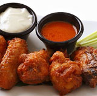

-

土耳其烤鸡，给你别样的味蕾享受！
土耳其烤鸡是一道西餐菜肴，口味香脆，主要原料有鸡，主要辅料/调料有酸乳酪等。原料需要： 1小咖啡杯酸乳酪， 1大汤匙黄油， 1大汤匙番茄酱和 2只小鸡。制作方法：先将小鸡放入炖锅中，加入盐和水，漫过鸡肉，烹调至鸡肉不能煮烂； 其次，把鸡肉取出放入煎锅中，在鸡肉上洒上酸乳酪屑，番茄酱，黄油汁； 最后，再将烤盘放入烤箱中，待鸡肉烤至金黄色后取出。 同时也可以制作出一种美味鸡汤。用酸乳酪，番茄酱，黄油汁和烤禽肉做汤。
-

巴克拉瓦，果仁蜜饼的异域甜蜜！
巴克拉瓦是西亚各国的著名甜点。它由很薄的酥皮一层一层裹起烤制而成， 中心部分基本由核桃、杏仁、开心果之类的坚果组成，口感酥松香脆，有黄油和蜜糖的清香。 巴克拉瓦呈层状，其中部是切碎的果仁，上下是多层用黄油刷过的酥皮。
- 制作糖浆，打碎干果，刷黄油，烤箱加热
- 准备酥皮，涂抹黄油，撒坚果，冰箱冷藏
- 蜜饼切块，烘烤至表面金黄，蜂蜜糖浆热淋，室温冷却
-

草莓水果塔，刮起一阵蜜汁风！
草莓水果塔是以 草莓、鸡蛋等食材制成的一道美食,口味香甜。做法：黄油切成1cm左右的小块，软化之后，用油面混合器搅拌成包谷面状； 加进面粉、盐，顺同一方向小火慢速搅至面糊能挂勺； 分次加入蛋液，面糊打至有光泽； 将面糊放进烤盘，放进预热烤箱，烘烤，取出晾凉； 再将鲜奶油、牛奶等同一方向快速搅拌打发； 待凉透，将其横劈为二，取一层泡芙将涂抹在上面，再摆放一层草莓，盖上另一张泡芙，上面摆放整颗草莓即可。
-

草莓龙舌兰，清凉提神的美味鸡尾酒！
草莓龙舌兰——草莓鸡尾酒，这种果汁浓厚的调酒最适合在草莓成熟时享用。特点：清凉提神
- 草莓洗净后拭干
- 碎冰、柠檬汁、草莓糖浆、龙舌兰酒、盐放进榨汁机打匀
- 把饮料倒进冰镇过的酒杯里，把半个草莓切开插在杯缘即可
-

椰浆饭，清淡醇厚的味觉体验！
椰浆饭（Nasi Lemak）是在文莱，马来西亚与新加坡很常见到的一道美食。事实上，它是马来西亚的非正式国肴。在印度尼西亚也有类似这样的美食，称作“乌督饭”。顾名思义，椰浆饭得名于其烹饪方法——用椰浆烹煮米饭，再用一点香兰叶略微调味，为米饭赋予扑鼻的清香。传统的马来式做法比较简单，其中加入江鱼仔、坚果、炸鱼、黄瓜，还可以加入一个鸡蛋。而另一种则是中式做法，里面的丰富配菜包括炸鸡腿、鸡肉肠、鱼糕、咖喱蔬菜以及午餐肉。